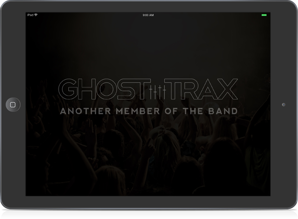
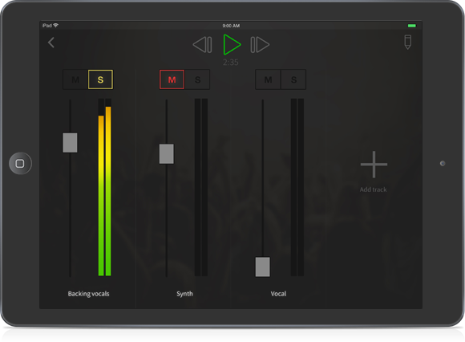
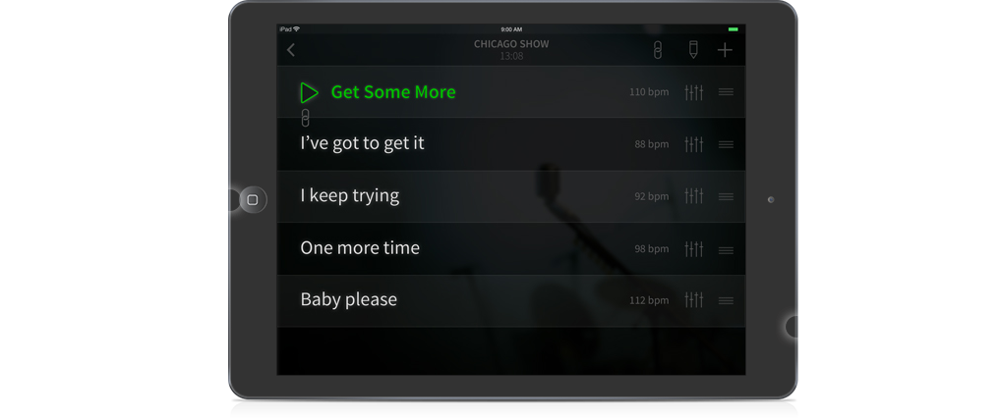
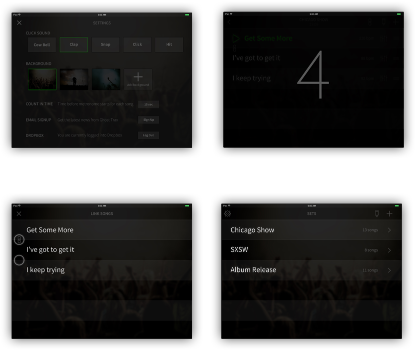

Set Up & Perform Your Backing Tracks

Built In Mixer
Stop rebouncing your backing tracks every time the mix is off. Ghost Trax has a built in mixer so you can adjust your levels anytime.

Separate Outputs
Ghost Trax outputs your backing tracks through the lightning output and the click track through the headphone jack, so the audience nevers hears the click.

Dropbox and iTunes Integration
Add your backing tracks to Ghost Trax no matter where you are. Use Dropbox to add tracks from the cloud or use iTunes to add tracks from your computer.
More Goodness
Built-In Metronome
Visual Count-In
Song Linking
Unlmited Sets
